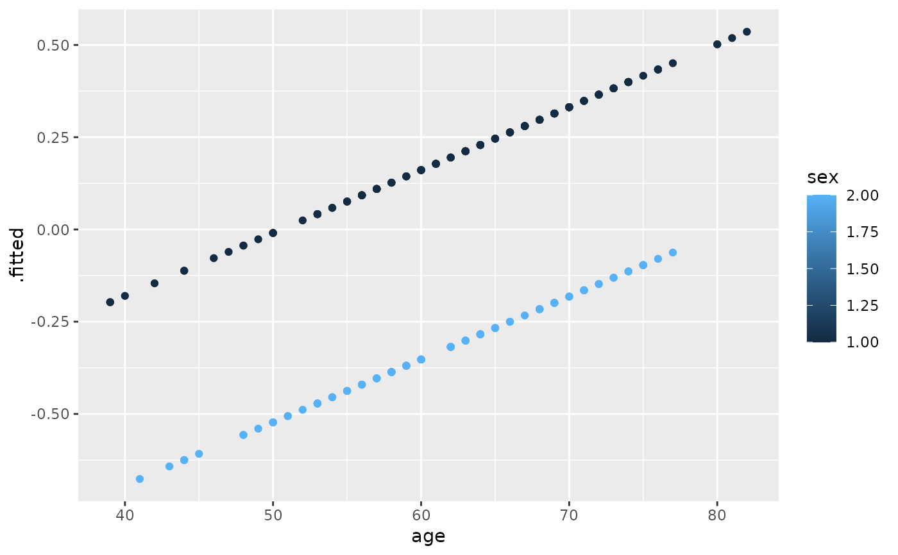
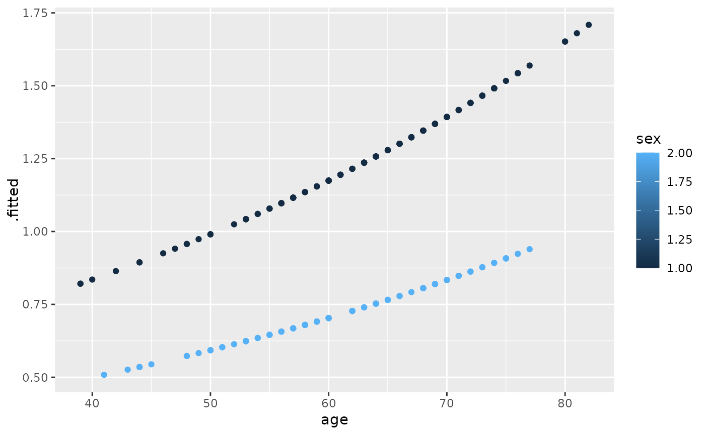
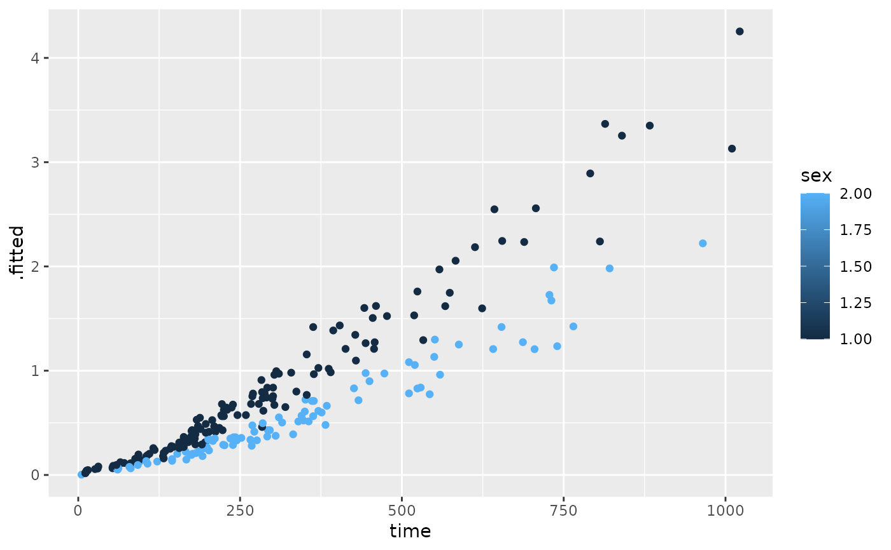

Tidy summarizes information about the components of a model. A model component might be a single term in a regression, a single hypothesis, a cluster, or a class. Exactly what tidy considers to be a model component varies across models but is usually self-evident. If a model has several distinct types of components, you will need to specify which components to return.
Usage
# S3 method for class 'coxph'
tidy(x, exponentiate = FALSE, conf.int = FALSE, conf.level = 0.95, ...)Arguments
- x
A
coxphobject returned fromsurvival::coxph().- exponentiate
Logical indicating whether or not to exponentiate the the coefficient estimates. This is typical for logistic and multinomial regressions, but a bad idea if there is no log or logit link. Defaults to
FALSE.- conf.int
Logical indicating whether or not to include a confidence interval in the tidied output. Defaults to
FALSE.- conf.level
The confidence level to use for the confidence interval if
conf.int = TRUE. Must be strictly greater than 0 and less than 1. Defaults to 0.95, which corresponds to a 95 percent confidence interval.- ...
For
tidy(), additional arguments passed tosummary(x, ...). Otherwise ignored.
See also
Other coxph tidiers:
augment.coxph(),
glance.coxph()
Other survival tidiers:
augment.coxph(),
augment.survreg(),
glance.aareg(),
glance.cch(),
glance.coxph(),
glance.pyears(),
glance.survdiff(),
glance.survexp(),
glance.survfit(),
glance.survreg(),
tidy.aareg(),
tidy.cch(),
tidy.pyears(),
tidy.survdiff(),
tidy.survexp(),
tidy.survfit(),
tidy.survreg()
Value
A tibble::tibble() with columns:
- estimate
The estimated value of the regression term.
- p.value
The two-sided p-value associated with the observed statistic.
- statistic
The value of a T-statistic to use in a hypothesis that the regression term is non-zero.
- std.error
The standard error of the regression term.
Examples
# load libraries for models and data
library(survival)
# fit model
cfit <- coxph(Surv(time, status) ~ age + sex, lung)
# summarize model fit with tidiers
tidy(cfit)
#> # A tibble: 2 × 5
#> term estimate std.error statistic p.value
#> <chr> <dbl> <dbl> <dbl> <dbl>
#> 1 age 0.0170 0.00922 1.85 0.0646
#> 2 sex -0.513 0.167 -3.06 0.00218
tidy(cfit, exponentiate = TRUE)
#> # A tibble: 2 × 5
#> term estimate std.error statistic p.value
#> <chr> <dbl> <dbl> <dbl> <dbl>
#> 1 age 1.02 0.00922 1.85 0.0646
#> 2 sex 0.599 0.167 -3.06 0.00218
lp <- augment(cfit, lung)
risks <- augment(cfit, lung, type.predict = "risk")
expected <- augment(cfit, lung, type.predict = "expected")
glance(cfit)
#> # A tibble: 1 × 18
#> n nevent statistic.log p.value.log statistic.sc p.value.sc
#> <int> <dbl> <dbl> <dbl> <dbl> <dbl>
#> 1 228 165 14.1 0.000857 13.7 0.00105
#> # ℹ 12 more variables: statistic.wald <dbl>, p.value.wald <dbl>,
#> # statistic.robust <dbl>, p.value.robust <dbl>, r.squared <dbl>,
#> # r.squared.max <dbl>, concordance <dbl>,
#> # std.error.concordance <dbl>, logLik <dbl>, AIC <dbl>, BIC <dbl>,
#> # nobs <dbl>
# also works on clogit models
resp <- levels(logan$occupation)
n <- nrow(logan)
indx <- rep(1:n, length(resp))
logan2 <- data.frame(
logan[indx, ],
id = indx,
tocc = factor(rep(resp, each = n))
)
logan2$case <- (logan2$occupation == logan2$tocc)
cl <- clogit(case ~ tocc + tocc:education + strata(id), logan2)
tidy(cl)
#> # A tibble: 9 × 5
#> term estimate std.error statistic p.value
#> <chr> <dbl> <dbl> <dbl> <dbl>
#> 1 toccfarm -1.90 1.38 -1.37 1.70e- 1
#> 2 toccoperatives 1.17 0.566 2.06 3.91e- 2
#> 3 toccprofessional -8.10 0.699 -11.6 4.45e-31
#> 4 toccsales -5.03 0.770 -6.53 6.54e-11
#> 5 tocccraftsmen:education -0.332 0.0569 -5.84 5.13e- 9
#> 6 toccfarm:education -0.370 0.116 -3.18 1.47e- 3
#> 7 toccoperatives:education -0.422 0.0584 -7.23 4.98e-13
#> 8 toccprofessional:education 0.278 0.0510 5.45 4.94e- 8
#> 9 toccsales:education NA 0 NA NA
glance(cl)
#> # A tibble: 1 × 18
#> n nevent statistic.log p.value.log statistic.sc p.value.sc
#> <int> <dbl> <dbl> <dbl> <dbl> <dbl>
#> 1 4190 838 666. 1.90e-138 682. 5.01e-142
#> # ℹ 12 more variables: statistic.wald <dbl>, p.value.wald <dbl>,
#> # statistic.robust <dbl>, p.value.robust <dbl>, r.squared <dbl>,
#> # r.squared.max <dbl>, concordance <dbl>,
#> # std.error.concordance <dbl>, logLik <dbl>, AIC <dbl>, BIC <dbl>,
#> # nobs <dbl>
library(ggplot2)
ggplot(lp, aes(age, .fitted, color = sex)) +
geom_point()

ggplot(risks, aes(age, .fitted, color = sex)) +
geom_point()

ggplot(expected, aes(time, .fitted, color = sex)) +
geom_point()
